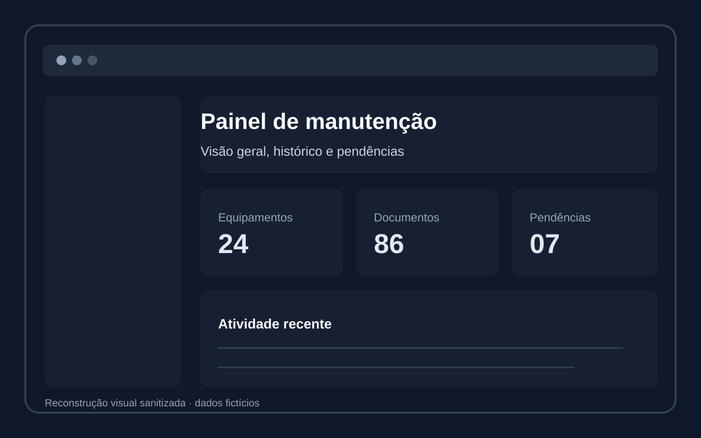
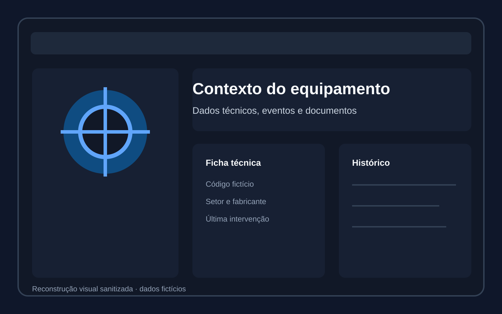
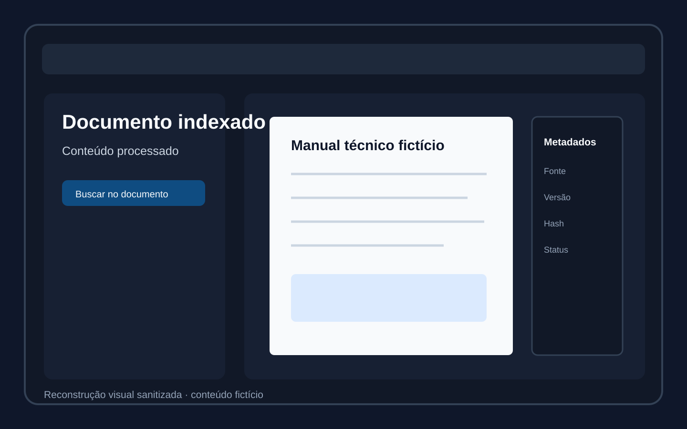
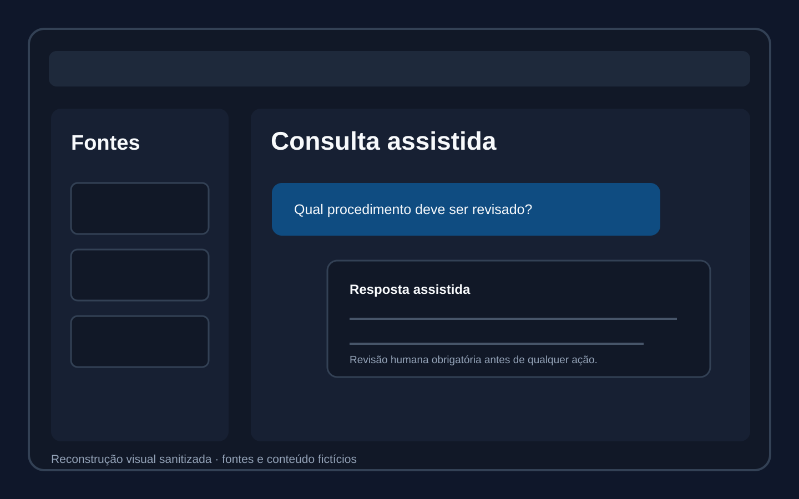

Problema
O processo dependia de planilhas, arquivos em rede, papel e memória. Localizar o ativo, comprovar uma execução ou recuperar histórico exigia trabalho manual.
CONHECIMENTO TÉCNICO E MANUTENÇÃO
CASE CONFIDENCIALAtivos, checklists, evidências e rastreabilidade
Digitalizei um processo antes dependente de planilhas, pastas de rede, papel e memória das pessoas, criando uma fonte central para registrar e consultar a manutenção dos equipamentos.

FLUXOS PRINCIPAIS



Busca local
SQLite FTS5 e recuperação textual permitem encontrar trechos sem depender da IA.
Supervisão
Respostas automáticas são tratadas como apoio; interpretação e ação permanecem humanas.
O processo dependia de planilhas, arquivos em rede, papel e memória. Localizar o ativo, comprovar uma execução ou recuperar histórico exigia trabalho manual.
Fluxo por ativo com código/TAG/nome, checklist, data/hora, responsável, fotos, observações, evidências e histórico enviado ao servidor.
Alterações preservam autor e valor anterior/novo; novas manutenções não apagam execuções anteriores. O histórico permanece consultável para acompanhamento e Qualidade.
O sistema privado está em uso. Dois responsáveis registram as manutenções executadas e a Qualidade consulta o histórico; 40+ ativos são acompanhados.
Limites
O sistema não substitui manual, responsável técnico, procedimento de segurança ou validação de engenharia.
Privacidade
Documentos, áudios, nomes, ativos, credenciais e infraestrutura reais não são publicados.
Este case mostra como aplico busca, transcrição e IA em um sistema que preserva contexto e revisão humana.